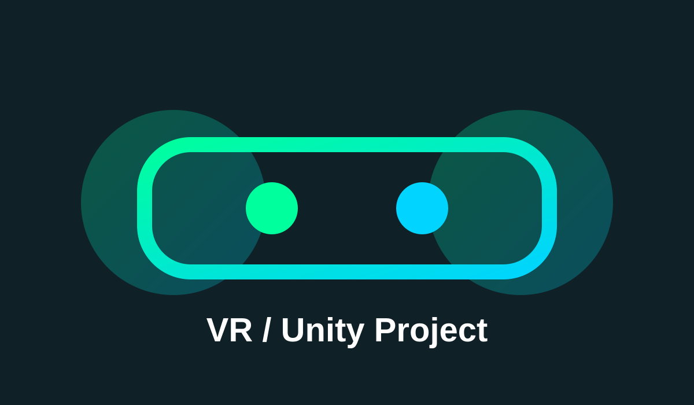
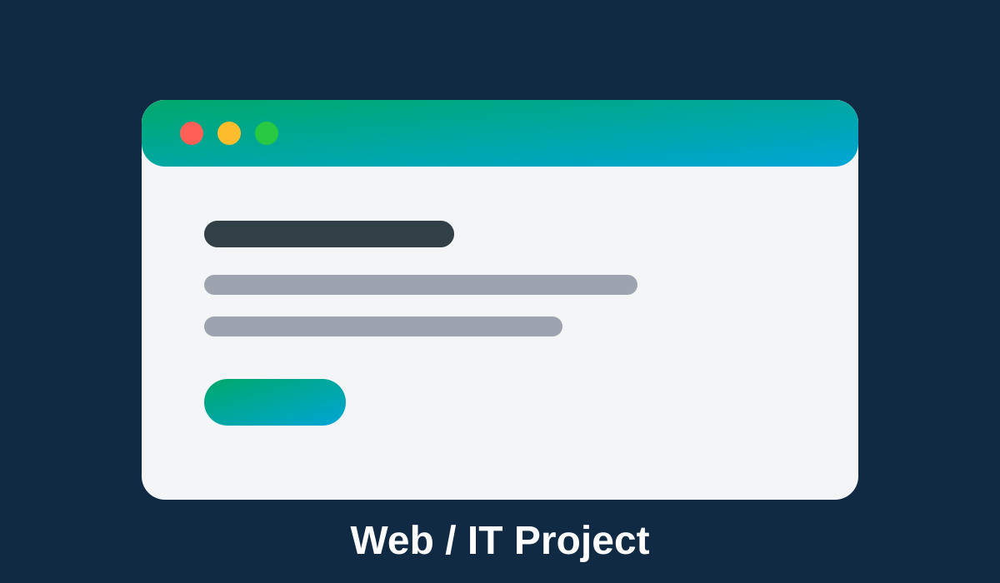
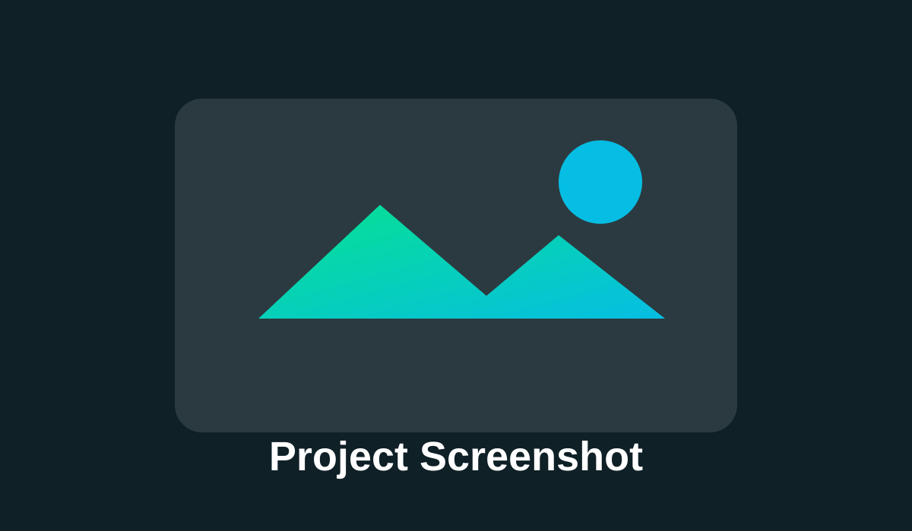

Behind the VR Wheel: Investigating the Impact of Assistance Systems on Driver Behavior
Bachelor's Thesis for my Computer Science degree in Paderborn University.
View PDFJava Developer | Unity Developer | VR Developer | Game Developer | Master's Student in Computer Science at Paderborn University specialized in Machine Learning
Master's student in Computer Science with a specialization in Data Science and Machine Learning. Several years of hands-on experience as a working student in German IT companies and as a research assistant at the SICP -- Software Innovation Campus Paderborn. Strong interests in Virtual Reality, Unity development, Machine Learning, LLMs, and interactive systems.
Bachelor's Thesis for my Computer Science degree in Paderborn University.
View PDFSeminar project in my Computer Science degree in Paderborn University
View PDFCo-author and VR project development for a doctoral thesis in Bielefeld University
Paper on ResearchGateCo-author and VR project development for a doctoral thesis in Bielefeld University
Paper on ResearchGateResearch group project for my Master's degree was supervised by Dr. Enes Yigitbas at Paderborn University and presented at the 2026 10th International Conference on Intelligent Computing and Virtual and Augmented Reality Simulations (ICVARS).
View PDFTo add more research files: put PDFs in assets/pdfs/, then copy one research card and change the title, description, and PDF link.
A section for software, web, Unity, VR, game development, and IT-related projects.

Describe your VR project here. Explain what it does, your role, technologies used, and important features.
View Project
Add a description of your IT or web project. Mention frontend/backend tools, database, APIs, and features.
View Project
Copy this card to add more projects. Replace the image, title, description, tags, and link.
View ProjectTo add project photos: put images in assets/images/ and update the image path in each project card.
You can view or download my CV as a PDF file.
Upload your CV to assets/pdfs/salah-seidan-cv.pdf, or change this link to your real PDF file name.
Contact me for collaborations, research discussions, project access, or professional opportunities.
Replace the email, GitHub, and LinkedIn URLs with your real information.